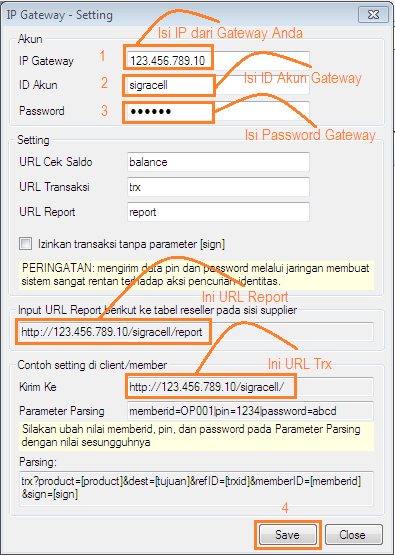
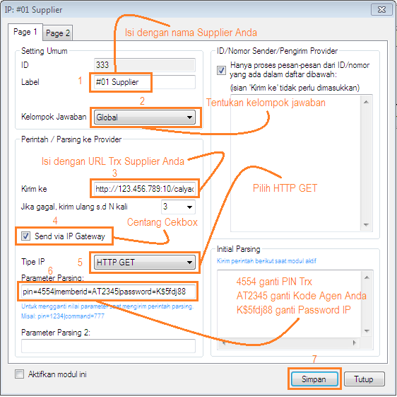
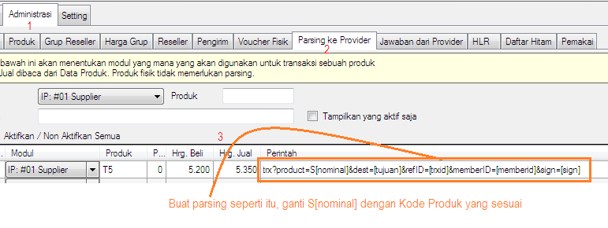
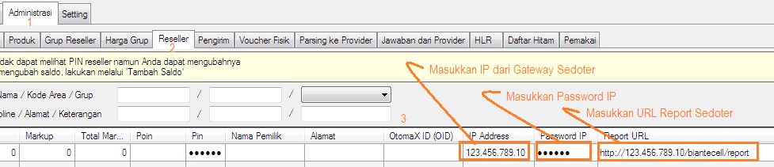

Setting IP Gateway
Setelah protokol Old Yahoo Messenger dimatikan layanannya server pulsa seolah kesulitan mencari layanan serupa dengan kualitas relatif sama atau bahkan lebih bagus, berawal dari situ OtomaX mencoba menghadirkan sebuah solusi, diantaranya IP Center klik disini disusul IP Gateway klik disini sebagai konektifitas. Dan bila Anda ingin memiliki layanan chat seperti Yahoo Messenger serta dapat bekerja dengan baik di OtomaX dan teruji klik disini.
IP Gateway merupakan protokol IP dengan kelebihan dapat melakukan transaksi IP tanpa harus memiliki IP Publik Statis sebagaimana IP Center. Layanan ini berbayar, oleh karena itu sebelum Anda dapat menggunakannya Anda harus daftar terlebih dahulu, untuk mendaftar klik disini.
Setelah Anda mendaftar dan memiliki Gateway berikut ini penggunaannya. Pada kesempatan ini dengan studi kasus Supplier dan Sedoter sama - sama menggunakan OtomaX dan layanan IP Gateway:
-
Pilih modul IP Gateway -> klik kanan -> klik Setting. Lakukan seperti petunjuk di bawah ini, misalnya kita punya Gateway http://123.456.789.10/sigracell/ (123.456.789.10 ialah IP dari Gateway kita).

Keterangan:- URL Trx, berikan ini kepada Sedoter ketika Anda menjadi Supplier.
- URL Report, berikan ini kepada Supplier ketika Anda menjadi Sedoter.
-
Jika Anda akan melakukan host to host ke server lain (sebagai Sedoter) dengan layanan IP Gateway, maka:
- Daftarlah transaksi IP ke Supplier dan berikan URL Report Anda.
- Mintalah URL Trx Supplier.
- Mintalah Password IP ke Supplier.
-
Pilih modul IP Client -> klik kanan -> klik Setting. Lakukan seperti petunjuk di bawah ini:

-
Masuk Administrasi -> Parsing ke Provider. Lakukan seperti petunjuk di bawah ini:

- Selesai
-
Jika Anda sebagai Supplier, maka:
- Mintalah IP dari Gateway Sedoter.
- Mintalah URL Report Sedoter.
- Buatkan Password IP minimal 6 digit terdiri dari angka, huruf besar, huruf kecil dan karakter; berikan ke Sedoter.
-
Masuk Administrasi -> Reseller -> cari Akun Sedoter Anda, kemudian lakukan seperti petunjuk di bawah ini:

- Selesai.
-
Sebagai Sedoter Anda dapat:
- Mengubah IP Address Anda.
- Mengubah Password IP Anda.
- Mengubah URL Report Anda.
- Anda dapat mengubah 3 hal di atas secara mandiri dengan format tertentu melalui SMS ke Nomor SMS Center Supplier dari Nomor Anda yang terdaftar di Supplier. Untuk mengetahui formatnya silahkan hubungi Supplier Anda.
- Sebagai Supplier Anda dapat menon-aktifkan transaksi IP Sedoter dengan menghapus Password IP Sedoter.
- Selesai.
Kemudian bila Anda punya pertanyaan atau permasalahan terkait transaksi IP Gateway (Support Berbayar) dapat menghubungi Kami, adapun Support Gratis klik disini.
Catatan 1: Sedoter ialah lawan dari supplier, yakni server yang mengambil stok atau host to host ke server lain; sedangkan Supplier ialah server yang stoknya diambil oleh server lain.
Catatan 2: Pastikan Anda telah meng-klik kalimat klik disini dan membaca semua isinya agar lebih memahami IP Gateway, ingat kata ibu guru: "Rajin Pangkal Pandai".